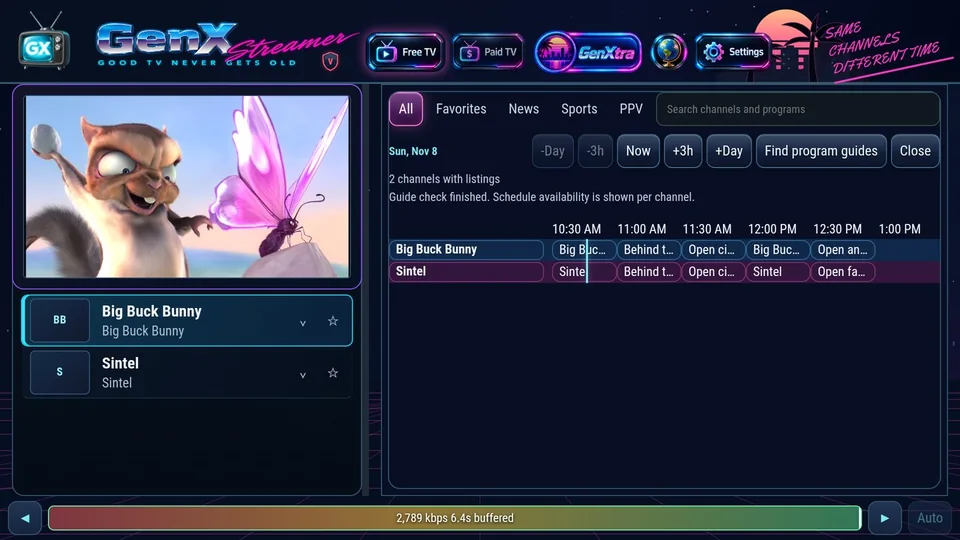
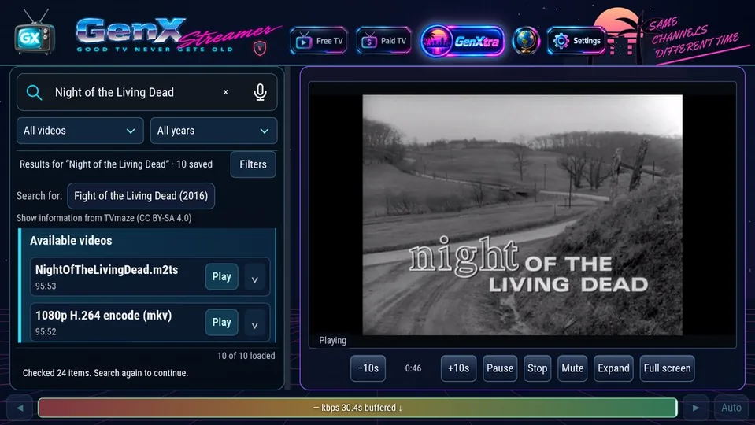
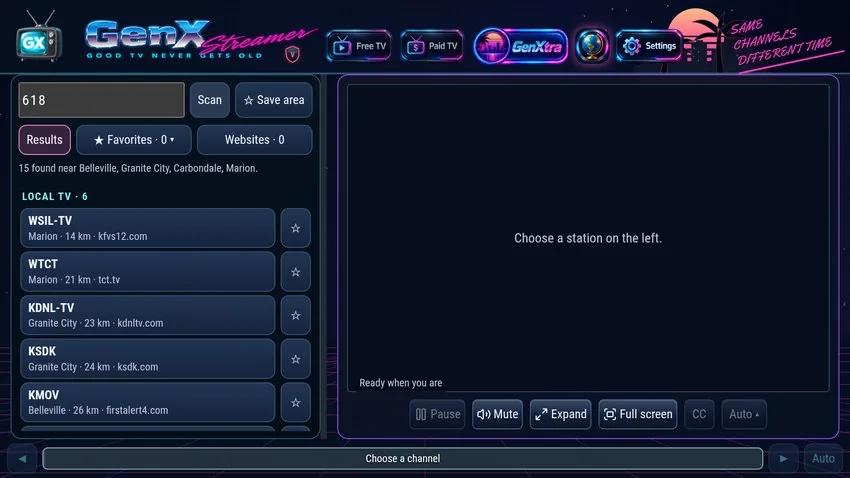

Good TV never gets old.
Your TV. Your lineup.
Start with an empty lineup. Discover public channels, see what’s on in the guide, and save the ones you want. GenX Streamer comes with no preloaded channels or subscriptions.
Free · Open source · No GenX account required
Commercial transcript and footage credits
- Your TV. Your lineup. A fresh GenX screen. Discover public sources and save the channels you want.
- Find it. Watch it. Free TV plays an open-film demo beside a sample program guide.
- Rediscover a classic. GenXtra plays the original black-and-white Night of the Living Dead (1968).
- Closer to home. Area code 618 and ZIP 62901 show local TV websites and radio results.
- Pass It Along. Share the app with a friend or send it to a compatible TV.
- Good TV never gets old. Download GenX Streamer free for Windows and Android.
Big Buck Bunny excerpt © 2008 Blender Foundation / www.bigbuckbunny.org, CC BY 3.0. The Guide schedule is illustrative. The commercial uses an original soundtrack.
Current release 0.1.33 · Installation and setup
PASS IT ALONG
Put GenX on a friend’s TV.
Send the app from your Android phone to a compatible Android TV or Google TV on the same Wi‑Fi network.
- Pick the TV in Install on TV.
- If prompted, enter the code shown on the TV.
- Approve the install with the TV remote.
Some TVs prompt you to install a download helper once.
Share from phone to phone over Wi‑Fi
Open Pass It Along and start sharing nearby. The other Android phone opens the local download page in its browser and approves the install.
See what watching looks like


See what’s on, keep watching
Browse the program guide while the current stream stays in view.
Sample schedule. Big Buck Bunny © 2008 Blender Foundation / www.bigbuckbunny.org, CC BY 3.0.


Rediscover a classic in GenXtra
Find public-domain films and classic TV, like the original 1968 Night of the Living Dead.
See local station discovery in action
Search area code 618 for local TV websites and radio streams near several cities, or enter ZIP 62901 to focus on Carbondale. See the ZIP results.


What you get
Discover and save public channels
GenX searches publicly available sources it can reach and checks which streams respond. You choose what to save and can add your own playlists.
GenXtra
A library of public-domain films and classic TV, with downloads.
Program guide
What's on now and next, instant replay and captions, with a remote-friendly design for TVs.
Paid TV, your way
Bring your own provider account; it stays in your device's protected storage.
Find local stations
Search by area code or ZIP for local TV websites and radio streams. Open sites inside GenX and save favorites.
Cast to a screen
Send what you're watching to a Chromecast or DLNA TV.
Old devices welcome
Runs on 32- and 64-bit Android TVs and handhelds, with its own decoders for formats some devices can't play.
Publishers decide what they make available. GenX manages how the app handles those sources, stores your lineup locally, and uses protected device storage for any provider credentials you add.
Get it
Android and Fire TV
Android TV, Google TV, Amazon Fire TV with Android-based Fire OS, plus Android phones, tablets and handhelds. Android 7.0 or newer; ARM, 32- and 64-bit.
Windows
Windows 10 and 11 (64-bit), as an installer-free exe or a portable ZIP.
Check your copy
Every file has a published checksum. How to verify a download.
About the GenX Streamer app
What is GenX Streamer?
GenX Streamer is a free, open-source TV player by Doug Trier. Watch public live channels, browse a program guide and explore GenXtra's public-domain films and classic TV. You can also bring your own playlists or provider account.
Which devices does it support?
Windows 10 and 11 (64-bit), and Android 7.0 or newer on ARM devices, including Android TV, Google TV, Amazon Fire TV and Fire TV Stick running Android-based Fire OS, phones, tablets and handhelds. There is currently no iPhone, iPad or Mac version.
Which Android APK should I use on Fire TV?
Fire TV and Fire TV Stick models that run Android-based Fire OS use the same ARM Android APK. See the Fire TV installation guide.
Does it include a paid TV subscription?
No. The app is free; paid services require your own provider account. Channel availability depends on the source and your location. A channel or guide listing does not guarantee that a stream is available or will play.
How do I install it?
Download the official Windows ZIP or Android APK, then follow the installation and setup guide. You can also install on a Google TV or Android TV from an Android phone using Pass It Along.
Content sources and rights
GenX Streamer starts with an empty channel lineup and includes no subscriptions. It searches publicly available sources it can reach, checks which streams respond, and lets you choose what to save. You can also add your own playlists or provider accounts.
Publishers and hosts control what they make publicly available. Users control the sources they add to their own devices. GenX is responsible for how the app handles those sources and protects user data.
Source availability changes over time. Discovery results reflect what GenX can reach when you search. A stream responding shows that it was reachable at the time of the check.
For requests to remove or restrict access to the underlying content, contact the publisher or hosting service directly.